EDA ka matlab Exploratory Data Analysis hai. Jab humein koi anjaana dataset milta hai aur humein pehle se nahi pata hota ki uske andar kya hidden patterns, missing values, correlation traps ya unusual anomalies chhipe hain, tab hum data ko systematically aur visually explore karte hain. Is grand finale lesson me hum Seaborn aur Pandas ke poore arsenal ko combine karenge taaki aap kisi bhi raw CSV file ko ek polished, evidence-based business ya academic insight report me convert kar sakein!
Socho ek college aapko 200 students ka academic record deta hai jisme attendance, assignment marks, internal scores, study hours aur final marks stored hain. Agar aap bina data ko dekhe seedha Machine Learning model me feed kar denge ya Dean ko report bana kar de denge, toh kya hoga?
995 enter ho gaya hai, toh standard deviation aur mean bilkul galat picture dikhayenge.Yahi reason hai ki har Data Scientist aur Data Analyst machine learning model train karne se pehle Exploratory Data Analysis (EDA) perform karta hai. EDA humein data ki real-world anatomy aur limitations ko discover karne me help karta hai.
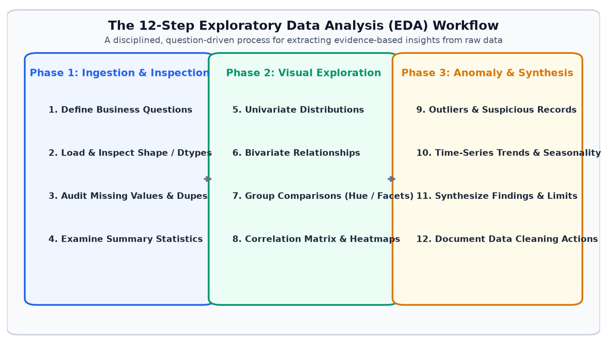
Sirf df.mean() ya summary numbers dekhna kaafi nahi hota. Famous Anscombe's Quartet dikhata hai ki 4 completely alag datasets ka mean, variance aur linear correlation exact same (correlation r = 0.816) ho sakta hai, lekin jab hum unka Seaborn scatter plot banate hain toh ek linear line hoti hai, ek curved parabola hoti hai, ek vertical line hoti hai aur ek me massive outlier hota hai!
Isliye EDA ek iterative detective process hai: hum question poochhte hain → code execute karte hain → graph inspect karte hain → nayi hypothesis form karte hain!
| Role | How EDA Transforms Their Daily Work |
|---|---|
| Data Analyst | Raw SQL extracts ko business metrics (churn, retention, margin) me translate karta hai aur unexpected drops discover karta hai. |
| Data Scientist & ML Engineer | Feature distributions, multicollinearity, skewness, aur data leakage detect karta hai before model training. |
| Business & Product Analyst | A/B experiment test results aur user cohort behaviour ko visualize karke feature roadmap decide karta hai. |
| Software / DevOps Engineer | API latency distribution, error rate spikes, aur microservice SLA breaches ko isolate karta hai. |
Chaliye dekhte hain ki ek professional analyst naya CSV file load karte hi kya mindset follow karta hai:
import pandas as pd
import seaborn as sns
import matplotlib.pyplot as plt
# Load college dataset
df = pd.read_csv("scratch/seaborn_topic20_data/student_eda_dataset.csv")
# Question 1: How many rows and columns are we dealing with?
print(f"Dataset Shape: {df.shape[0]} rows and {df.shape[1]} columns")
# Question 2: What are the exact columns and data types?
print("\nColumns and Inferred Types:")
for col, dtype in df.dtypes.items():
print(f" - {col:<18}: {dtype}")
# Question 3: Are there missing values that could break plots?
null_counts = df.isnull().sum()
print("\nColumns with Missing Values:")
print(null_counts[null_counts > 0])Kabhi bhi bina purpose ke random 20 charts mat plot kijiye. Har chart ko ek specific analytical question ka answer dena chahiye: "Kya Computer Science ke students zyada study hours spend karte hain?", "Kya attendance 75% se kam hone par failure rate badhta hai?"
Data exploration shuru karne se pehle 3 core testable hypotheses formulate karna best practice hai:
# Define our 3 Core Hypotheses for the College EDA:
hypotheses = [
"H1: Study hours will have a strong positive linear correlation with final exam score.",
"H2: Internal marks and assignment scores act as early leading indicators for the final score.",
"H3: Students with attendance < 75% will show high variance in scores, regardless of study hours."
]
print("Formulated EDA Hypotheses to Test with Seaborn:")
for h in hypotheses:
print(" *", h)Seaborn graph draw karne se pehle Pandas ke through tabular boundary aur data health inspect karna mandatory hai. Summary tables humein distribution limits aur missingness ka overview deti hain.
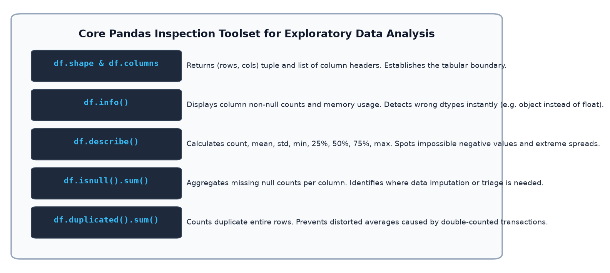
shape, info(), describe(), isnull(), and duplicated().| Pandas Command | Return Value | Hinglish Explanation & Practical Value |
|---|---|---|
df.head(n=5) |
Top 5 rows | First few records dekh kar column formats, naming style, aur actual sample values check hoti hain. |
df.tail(n=5) |
Bottom 5 rows | End of file inspect karna zaroori hai taaki summary/total rows (e.g. 'Grand Total') spot ho sakein. |
df.shape |
(rows, cols) tuple |
Data volume pata chalta hai. Agar rows 100 hain toh complex deep learning model fit nahi hoga. |
df.info() |
Dtypes & non-null counts | Sabse powerful single check! Agar sales_amount column object dikhe, matlab usme dollar signs ya dirty strings hain! |
df.describe() |
Summary statistics | Count, mean, std, min, 25%, 50%, 75%, max. Impossible negative values ya 9999 values yahan pakdi jaati hain. |
df.isnull().sum() |
Null count series | Columns me missing records ka exact count batata hai. |
df.duplicated().sum() |
Integer duplicate count | Kitni exact duplicate rows hain jo analysis ko duplicate weight de sakti hain. |
Yeh script college student performance dataset ko systematically inspect karta hai:
import pandas as pd
df_student = pd.read_csv("scratch/seaborn_topic20_data/student_eda_dataset.csv")
print("=== 1. DATASET SHAPE ===")
print(f"Total Rows: {df_student.shape[0]}, Total Columns: {df_student.shape[1]}")
print("\n=== 2. FIRST 3 RECORDS (df.head(3)) ===")
print(df_student.head(3).to_string())
print("\n=== 3. SUMMARY STATISTICS (df.describe().round(2)) ===")
print(df_student.describe().round(2).to_string())
print("\n=== 4. DATA AUDIT: NULLS & DUPLICATES ===")
print("Missing values per column:")
print(df_student.isnull().sum()[df_student.isnull().sum() > 0])
print(f"Duplicate rows detected: {df_student.duplicated().sum()}")E-commerce orders dataset ko inspect karna jisme categorical categories aur order dates shamil hain:
import pandas as pd
df_ecom = pd.read_csv("scratch/seaborn_topic20_data/ecommerce_eda_dataset.csv")
print("=== 1. E-COMMERCE STRUCTURE ===")
print(f"Total Transactions: {len(df_ecom)}")
print("Data Types:")
print(df_ecom.dtypes)
print("\n=== 2. NUMERICAL OVERVIEW ===")
print(df_ecom[["sales_amount", "quantity", "discount_pct", "customer_rating"]].describe().round(2))
print("\n=== 3. CATEGORICAL FREQUENCIES ===")
print("Orders by Category:")
print(df_ecom["category"].value_counts())
print("\nOrders by Region:")
print(df_ecom["region"].value_counts())Jab aap df.describe() run karte hain, toh hamesha mean aur 50% (median) ko compare kijiye. Agar sales_amount ka mean $330 hai lekin median $150 hai, iska matlab dataset me extreme positive skewness ya massive bulk orders maujood hain!
"Garbage in, garbage out" — data science ka sabse bada truth hai. Agar aapne missing values aur dirty duplicates ko bina audit kiye direct Seaborn heatmap ya regression plot me bhej diya, toh calculations misleading hongi.
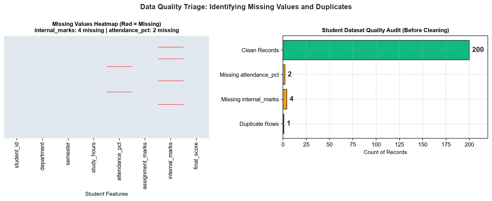
dropna()): Sirf tab use karein jab missingness completely random ho (MCAR) aur missing rows total dataset ka bohot chhota hissa hon (< 2%). Agar 20% rows delete kar di, toh sample bias create ho jayega!fillna(median)): Numeric variables me median use karna safest hota hai kyunki median outliers se affect nahi hota."Unrated" dekar preserve karein.Real-world databases me network retry ya accidental form submission ki wajah se exact duplicate rows create ho jaati hain. Seaborn me duplicate rows data points ko artificially dense bana deti hain:
df.duplicated().sum() → Check duplicate count.df.drop_duplicates(inplace=True) → Remove exact identical rows, retaining the first occurrence.Student dataset me 1 duplicate row aur missing values hain. Dekhiye kaise hum audit note record karke clean karte hain:
import pandas as pd
import numpy as np
df = pd.read_csv("scratch/seaborn_topic20_data/student_eda_dataset.csv")
# 1. Inspect Duplicates
dupe_count = df.duplicated().sum()
print(f"Audit Finding: Found {dupe_count} duplicate row.")
df_clean = df.drop_duplicates().copy()
print(f"Action: Removed duplicate. New row count: {len(df_clean)}")
# 2. Inspect Missing Values
print("\nMissing values before imputation:")
print(df_clean[["internal_marks", "attendance_pct"]].isnull().sum())
# 3. Contextual Median Imputation
int_median = df_clean["internal_marks"].median()
att_median = df_clean["attendance_pct"].median()
df_clean["internal_marks"] = df_clean["internal_marks"].fillna(int_median)
df_clean["attendance_pct"] = df_clean["attendance_pct"].fillna(att_median)
print(f"\nAction: Imputed internal_marks with median ({int_median})")
print(f"Action: Imputed attendance_pct with median ({att_median})")
print("Verification: Remaining nulls in dataset:", df_clean.isnull().sum().sum())String dates ko real datetime me convert karna taaki time-based EDA possible ho:
import pandas as pd
df_ecom = pd.read_csv("scratch/seaborn_topic20_data/ecommerce_eda_dataset.csv")
# 1. Drop duplicates
df_ecom_clean = df_ecom.drop_duplicates().copy()
# 2. Parse dates explicitly
df_ecom_clean["order_date"] = pd.to_datetime(df_ecom_clean["order_date"])
df_ecom_clean["order_month"] = df_ecom_clean["order_date"].dt.month_name()
df_ecom_clean["order_quarter"] = df_ecom_clean["order_date"].dt.quarter
# 3. Impute missing customer ratings with neutral median (4.0)
df_ecom_clean["customer_rating"] = df_ecom_clean["customer_rating"].fillna(df_ecom_clean["customer_rating"].median())
print("E-Commerce Cleaned Dataset Summary:")
print(f"Valid orders: {len(df_ecom_clean)}")
print(f"Date span: from {df_ecom_clean['order_date'].min().date()} to {df_ecom_clean['order_date'].max().date()}")
print(f"Cleaned columns: {list(df_ecom_clean.columns)}")Agar kisi column me 40% data missing hai, toh dropna() karne se aadha dataset delete ho jayega! Hamesha document kijiye: What issue was found? What action was taken? What information might be lost? How was the result verified?
Univariate analysis EDA ka pehla visual step hota hai. Iska primary objective hota hai: "Ek single variable ka distribution kaisa hai?" Hum numerical variables me unki central tendency, spread, skewness, aur outliers inspect karte hain; jabki categorical variables me class frequency aur category imbalance audit karte hain.
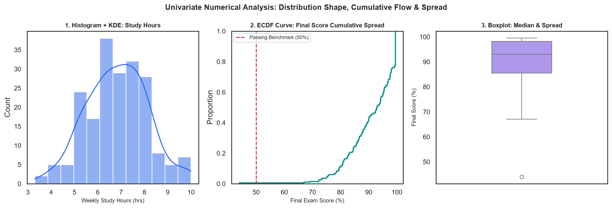
| Seaborn Function | What It Shows Best | Analyst Interpretation Guide |
|---|---|---|
sns.histplot(kde=True) |
Data frequency across discrete bins with density curve. | Bimodal peaks (two clusters) ya bell-curve normal distribution spot karne ke liye ideal. Bin size badalne se visual appearance change hota hai. |
sns.kdeplot() |
Continuous Probability Density Estimate (smoothed curve). | Data ke probability mass ko estimate karta hai. Remember: KDE ek mathematical estimate hai, exact distribution nahi! |
sns.ecdfplot() |
Empirical Cumulative Distribution Function (0% to 100%). | Zero bin-bias! Aap direct dekh sakte hain: "Kitne % students 50 marks se kam score kar rahe hain?" ya "80th percentile kahan par hai?" |
sns.boxplot() |
Tukey's Five-Number Summary (Min, Q1, Median, Q3, Max). | Median position aur interquartile spread dekh kar skewness aur potential outlier points immediately reveal hote hain. |
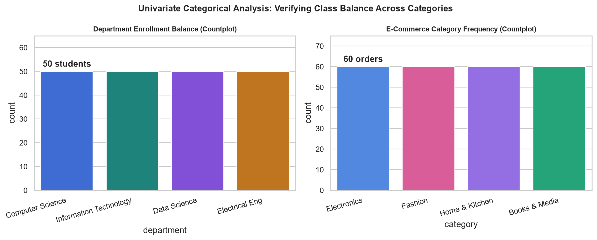
Yeh script student study hours par histogram plot karke bin size ka effect aur KDE smoothing evaluate karta hai:
import seaborn as sns
import matplotlib.pyplot as plt
import pandas as pd
df = pd.read_csv("scratch/seaborn_topic20_data/student_eda_dataset.csv").drop_duplicates()
plt.figure(figsize=(7, 4.5))
sns.histplot(df["study_hours"], kde=True, bins=12, color="#2563EB", edgecolor="white")
plt.title("Study Hours Distribution (Histogram + KDE)", fontsize=11, weight="bold")
plt.xlabel("Weekly Study Hours (hrs)", fontsize=10)
plt.ylabel("Number of Students", fontsize=10)
plt.tight_layout()
plt.show()sns.ecdfplot()ECDF curve se passing benchmark (50% marks) evaluate karna:
import seaborn as sns
import matplotlib.pyplot as plt
import pandas as pd
df = pd.read_csv("scratch/seaborn_topic20_data/student_eda_dataset.csv").drop_duplicates()
plt.figure(figsize=(7, 4.5))
sns.ecdfplot(data=df, x="final_score", color="#0D9488", linewidth=2.5)
plt.axvline(50, color="#DC2626", linestyle="--", label="Passing Benchmark (50%)")
plt.axhline(0.5, color="#64748B", linestyle=":", label="Median (50th Percentile)")
plt.title("Final Exam Score Cumulative Distribution (ECDF)", fontsize=11, weight="bold")
plt.xlabel("Final Exam Score (%)", fontsize=10)
plt.ylabel("Cumulative Proportion (0.0 to 1.0)", fontsize=10)
plt.legend(loc="upper left")
plt.tight_layout()
plt.show()sns.countplot()Categorical columns me class balance verify karna taaki koi group severely under-represented na ho:
import seaborn as sns
import matplotlib.pyplot as plt
import pandas as pd
df = pd.read_csv("scratch/seaborn_topic20_data/student_eda_dataset.csv").drop_duplicates()
plt.figure(figsize=(8, 4.5))
dept_order = df["department"].value_counts().index
ax = sns.countplot(data=df, x="department", order=dept_order, palette="viridis", hue="department", legend=False)
ax.bar_label(ax.containers[0], fmt="%d students", padding=4, weight="bold")
plt.title("Department Enrollment Frequency Balance", fontsize=11, weight="bold")
plt.xlabel("Academic Department", fontsize=10)
plt.ylabel("Enrolled Students", fontsize=10)
plt.xticks(rotation=15, ha="right")
plt.tight_layout()
plt.show()Jab data heavily skewed hota hai (jaise sales revenue), tab log scale explore karna insight deta hai:
import seaborn as sns
import matplotlib.pyplot as plt
import pandas as pd
df_ecom = pd.read_csv("scratch/seaborn_topic20_data/ecommerce_eda_dataset.csv").drop_duplicates()
fig, axes = plt.subplots(1, 2, figsize=(11, 4.5))
# Linear distribution
sns.histplot(df_ecom["sales_amount"], kde=True, color="#EC4899", ax=axes[0])
axes[0].set_title("Raw Sales (Right-Skewed Distribution)", fontsize=10, weight="bold")
# Boxplot highlighting extreme long tail
sns.boxplot(x=df_ecom["sales_amount"], color="#F472B6", ax=axes[1])
axes[1].set_title("Sales Boxplot (Extreme Right-Hand Outliers)", fontsize=10, weight="bold")
plt.tight_layout()
plt.show()Jab hum do variables ko simultaneously explore karte hain, toh hum poochhte hain: "Kya variable X ke change hone par variable Y me koi systematic pattern dikhta hai?"
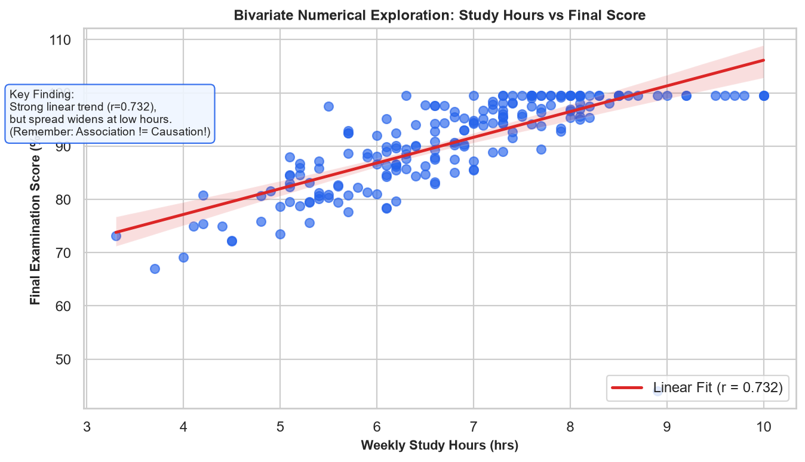
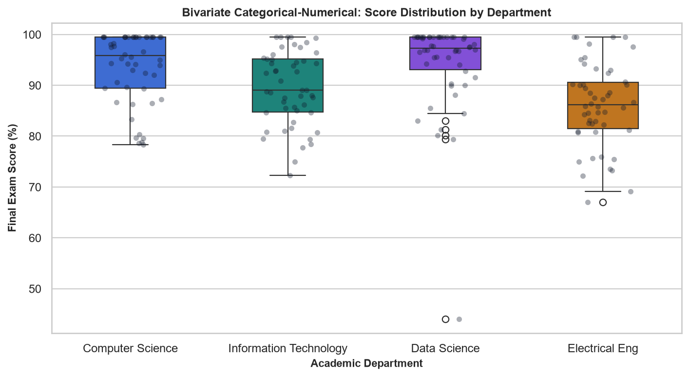
| Variable Combination | Recommended Seaborn Plots | Primary Exploration Objective |
|---|---|---|
| Numeric vs Numeric | sns.scatterplot(), sns.regplot() |
Linear or non-linear trend, homoscedasticity, clustering, correlation. |
| Categorical vs Numeric | sns.boxplot(), sns.violinplot(), sns.stripplot() |
Comparing medians, IQR spread, skewness differences between groups. |
| Time vs Numeric | sns.lineplot() |
Temporal trends, seasonality cycles, periodic surges. |
| Categorical vs Categorical | pd.crosstab() + sns.heatmap(), grouped barplot |
Contingency counts, conditional distributions across categories. |
sns.regplot()import seaborn as sns
import matplotlib.pyplot as plt
import pandas as pd
df = pd.read_csv("scratch/seaborn_topic20_data/student_eda_dataset.csv").drop_duplicates()
plt.figure(figsize=(8, 5))
sns.regplot(
data=df,
x="study_hours",
y="final_score",
color="#2563EB",
scatter_kws={"alpha": 0.6, "s": 40},
line_kws={"color": "#DC2626", "linewidth": 2}
)
plt.title(f"Study Hours vs Final Score (Linear Fit r = 0.732)", fontsize=11, weight="bold")
plt.xlabel("Weekly Study Hours (hrs)", fontsize=10)
plt.ylabel("Final Exam Score (%)", fontsize=10)
plt.tight_layout()
plt.show()Sirf boxplot dekhne par sample density chhip jaati hai. Stripplot ko overlay karke har individual student raw point visible rehta hai:
import seaborn as sns
import matplotlib.pyplot as plt
import pandas as pd
df = pd.read_csv("scratch/seaborn_topic20_data/student_eda_dataset.csv").drop_duplicates()
plt.figure(figsize=(9, 5))
# 1. Base boxplot for median and quartiles
sns.boxplot(data=df, x="department", y="final_score", palette="Set2", hue="department", legend=False, width=0.5)
# 2. Transparent jittered stripplot for sample size transparency
sns.stripplot(data=df, x="department", y="final_score", color="#0F172A", alpha=0.35, size=5, jitter=0.2)
plt.title("Department Exam Performance (Boxplot + Stripplot Overlay)", fontsize=11, weight="bold")
plt.xlabel("Academic Department", fontsize=10)
plt.ylabel("Final Exam Score (%)", fontsize=10)
plt.tight_layout()
plt.show()import seaborn as sns
import matplotlib.pyplot as plt
import pandas as pd
df_ecom = pd.read_csv("scratch/seaborn_topic20_data/ecommerce_eda_dataset.csv").drop_duplicates()
plt.figure(figsize=(9, 4.8))
sns.boxplot(data=df_ecom, x="category", y="sales_amount", palette="mako", hue="category", legend=False)
plt.title("Sales Amount Variance Across Product Categories", fontsize=11, weight="bold")
plt.xlabel("Product Category", fontsize=10)
plt.ylabel("Sales Amount ($ USD)", fontsize=10)
plt.tight_layout()
plt.show()import pandas as pd
df_ecom = pd.read_csv("scratch/seaborn_topic20_data/ecommerce_eda_dataset.csv").drop_duplicates()
summary = df_ecom.groupby("category")["sales_amount"].agg(["count", "mean", "median", "std"]).round(2)
print("Category Sales Comparison (Mean vs Median):")
print(summary)
Real-world problems me variables isolated nahi hote. Jab hum ek saath 3 ya 4 features explore karte hain, toh hum hue, style, size aur Faceting (Small Multiples) ka use karte hain.
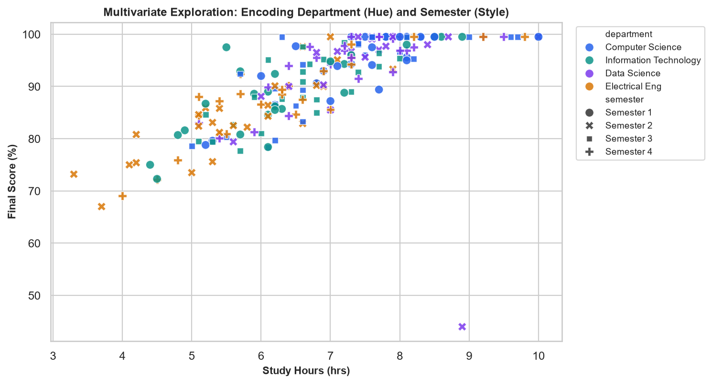
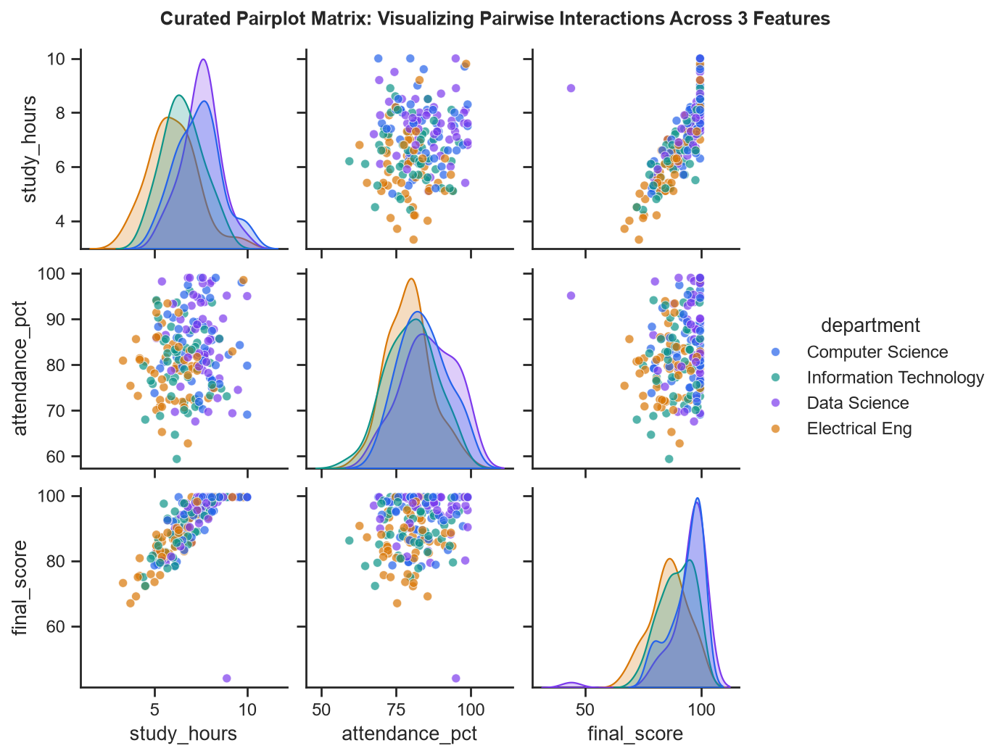
Agar aap ek single chart me hue, style, size aur alpha charon encode kar denge, toh reader ka dimaag confuse ho jayega. Jab 3 se zyada dimensions hon, toh Faceting (multiple subplots via col ya row) sabse clean human-readable solution hai!
import seaborn as sns
import matplotlib.pyplot as plt
import pandas as pd
df = pd.read_csv("scratch/seaborn_topic20_data/student_eda_dataset.csv").drop_duplicates()
plt.figure(figsize=(9, 5))
sns.scatterplot(
data=df,
x="study_hours",
y="final_score",
hue="department",
style="semester",
palette="deep",
s=65,
alpha=0.85
)
plt.title("Study Hours vs Final Score by Department & Semester", fontsize=11, weight="bold")
plt.legend(bbox_to_anchor=(1.02, 1), loc="upper left")
plt.tight_layout()
plt.show()
Bohot se beginners pure dataset par sns.pairplot(df) chala dete hain jisme ID columns bhi plot ho jaate hain. Hamesha curated numeric subset select kijiye:
import seaborn as sns
import matplotlib.pyplot as plt
import pandas as pd
df = pd.read_csv("scratch/seaborn_topic20_data/student_eda_dataset.csv").drop_duplicates()
curated_cols = ["study_hours", "attendance_pct", "final_score", "department"]
g = sns.pairplot(
data=df[curated_cols],
hue="department",
palette="deep",
diag_kind="kde",
height=2.2
)
g.fig.subplots_adjust(top=0.92)
g.fig.suptitle("Curated Pairplot Matrix: 3 Core Academic Predictors", fontsize=11, weight="bold")
plt.show()Jab dataset me kai numerical variables hote hain, toh hum yeh samajhna chahte hain ki kaun se variables aapas me co-move karte hain. Pearson Correlation Coefficient (r) do variables ke beech linear relationship ki strength aur direction ko measure karta hai:
r = +1.0: Perfect Positive Linear Correlation (Ek badhta hai, toh dusra proportionally badhta hai).r = 0.0: Zero Linear Correlation (Dono ke beech koi straight-line pattern nahi hai).r = -1.0: Perfect Negative Linear Correlation (Ek badhta hai, toh dusra proportionally ghat-ta hai).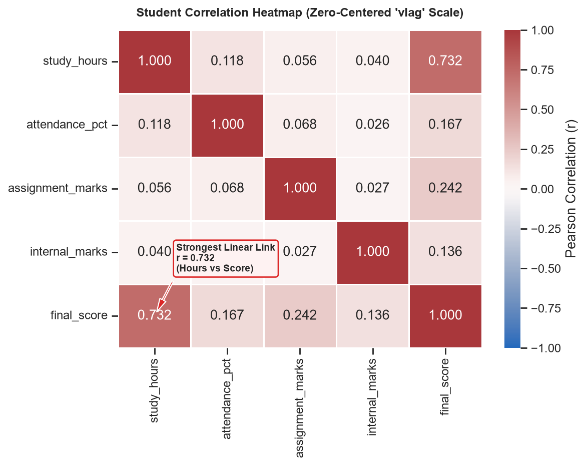
vlag) highlighting the strongest linear link (study_hours vs final_score, r = 0.732).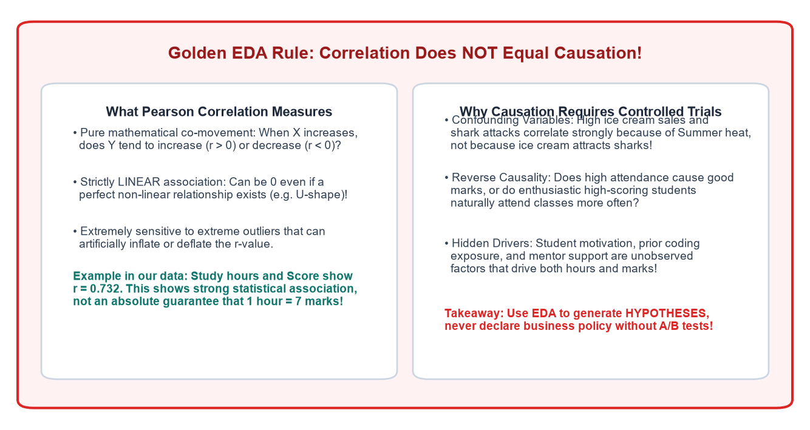
Agar study hours aur final marks me r = 0.732 hai, iska matlab statistical association hai, koi absolute guarantee nahi! Kisi student ki prior foundation, teacher quality, aur exam-day health confounding variables hote hain. EDA hypotheses generate karta hai, policy decisions nahi!
import seaborn as sns
import matplotlib.pyplot as plt
import pandas as pd
df = pd.read_csv("scratch/seaborn_topic20_data/student_eda_dataset.csv").drop_duplicates()
num_cols = ["study_hours", "attendance_pct", "assignment_marks", "internal_marks", "final_score"]
corr_matrix = df[num_cols].corr()
print("Calculated Pearson Correlation Matrix:")
print(corr_matrix.round(3))
plt.figure(figsize=(7, 5.5))
sns.heatmap(
corr_matrix,
annot=True,
fmt=".3f",
cmap="vlag",
vmin=-1,
vmax=1,
center=0,
linewidths=1.2,
linecolor="white",
cbar_kws={"label": "Pearson r"}
)
plt.title("Academic Feature Correlation Matrix", fontsize=11, weight="bold")
plt.tight_layout()
plt.show()import seaborn as sns
import matplotlib.pyplot as plt
import pandas as pd
df_ecom = pd.read_csv("scratch/seaborn_topic20_data/ecommerce_eda_dataset.csv").drop_duplicates()
ecom_num = ["sales_amount", "quantity", "discount_pct", "customer_rating"]
plt.figure(figsize=(6.5, 5))
sns.heatmap(
df_ecom[ecom_num].corr(),
annot=True,
fmt=".2f",
cmap="coolwarm",
vmin=-1,
vmax=1,
center=0,
linewidths=1
)
plt.title("E-Commerce Operational Correlations", fontsize=11, weight="bold")
plt.tight_layout()
plt.show()
Agar relationship curved ya U-shaped hai, toh Pearson r near zero aa sakta hai! Dekhiye:
import numpy as np
import pandas as pd
# Generate quadratic U-shape relationship
x = np.linspace(-10, 10, 100)
y = x**2
df_quad = pd.DataFrame({"X": x, "Y": y})
r_val = df_quad["X"].corr(df_quad["Y"])
print(f"Calculated Pearson Correlation for perfect parabola: {r_val:.4f}")
print("Lesson: Low Pearson correlation (r ≈ 0) does NOT prove lack of relationship!")import pandas as pd
df = pd.read_csv("scratch/seaborn_topic20_data/student_eda_dataset.csv")
# GOOD PRACTICE: Always exclude ID or code columns from numerical correlation!
non_id_numeric = [col for col in df.select_dtypes(include="number").columns if "id" not in col.lower()]
print("Selected meaningful numerical features for correlation:")
print(non_id_numeric)Outlier ek aisa observation hota hai jo baaki data cluster se abnormally door situated hota hai. Beginner analysts ki sabse common mistake hoti hai: "Outlier dikha nahi ki foran drop kar diya!"
Real-world EDA me outliers 3 categories me split hote hain:
850% instead of 85%. (Fix: Correct or drop if irrecoverable).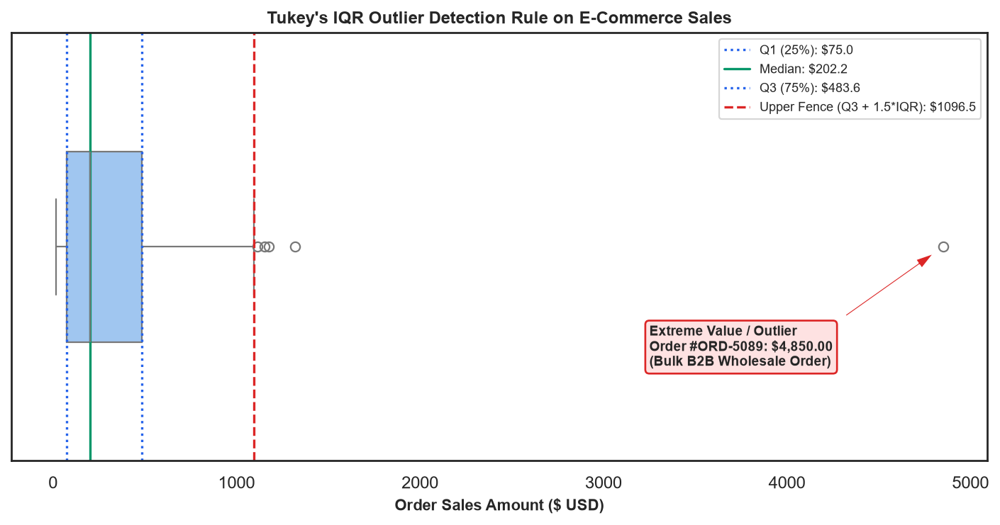
Q3 + 1.5 × IQR on E-Commerce Sales.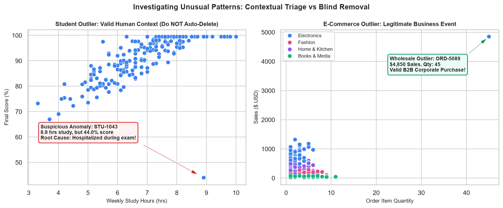
import pandas as pd
import numpy as np
df_ecom = pd.read_csv("scratch/seaborn_topic20_data/ecommerce_eda_dataset.csv").drop_duplicates()
q1 = df_ecom["sales_amount"].quantile(0.25)
q3 = df_ecom["sales_amount"].quantile(0.75)
iqr = q3 - q1
lower_fence = q1 - 1.5 * iqr
upper_fence = q3 + 1.5 * iqr
outliers = df_ecom[(df_ecom["sales_amount"] < lower_fence) | (df_ecom["sales_amount"] > upper_fence)]
print(f"IQR: ${iqr:.2f} | Upper Fence: ${upper_fence:.2f}")
print(f"Identified {len(outliers)} statistical outliers out of {len(df_ecom)} orders.")
print("\nTop Outlier Record:")
print(outliers.sort_values(by="sales_amount", ascending=False).head(1)[["order_id", "category", "quantity", "sales_amount"]])import pandas as pd
df = pd.read_csv("scratch/seaborn_topic20_data/student_eda_dataset.csv").drop_duplicates()
# Find students with study_hours > 8.0 but final_score < 50.0
anomalies = df[(df["study_hours"] > 8.0) & (df["final_score"] < 50.0)]
print("Identified Unusual High-Study / Low-Score Anomalies:")
for idx, row in anomalies.iterrows():
print(f"Student: {row['student_id']} | Study: {row['study_hours']} hrs | Score: {row['final_score']}% | Dept: {row['department']}")
print(" -> Investigation Action: Verified with student affairs: Student was hospitalized during finals!")Jab data me dates ya timestamps involve hote hain, toh normal scatter plots useless ho jaate hain. Time-based EDA me hum trend (long-term movement), seasonality (periodic repeating cycles jaise holiday spikes), aur irregular system incidents explore karte hain.
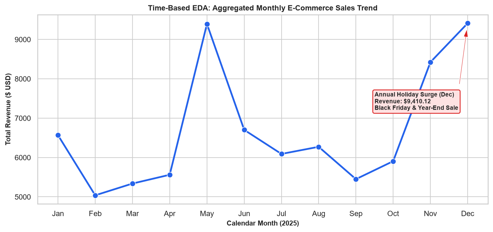
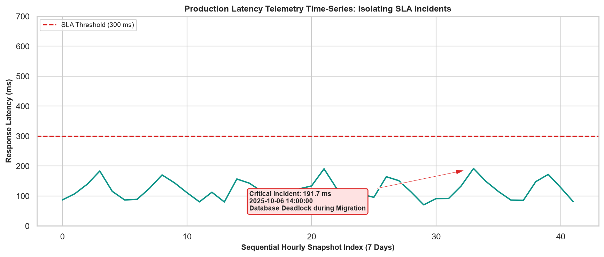
import seaborn as sns
import matplotlib.pyplot as plt
import pandas as pd
df_ecom = pd.read_csv("scratch/seaborn_topic20_data/ecommerce_eda_dataset.csv").drop_duplicates()
df_ecom["order_date"] = pd.to_datetime(df_ecom["order_date"])
df_ecom["month_name"] = df_ecom["order_date"].dt.strftime("%b")
month_order = ["Jan", "Feb", "Mar", "Apr", "May", "Jun", "Jul", "Aug", "Sep", "Oct", "Nov", "Dec"]
monthly = df_ecom.groupby("month_name")["sales_amount"].sum().reindex(month_order).reset_index()
plt.figure(figsize=(9, 4.5))
sns.lineplot(data=monthly, x="month_name", y="sales_amount", marker="o", color="#2563EB", lw=2.5)
plt.title("Aggregated Monthly Sales (Notice Q4 Surge)", fontsize=11, weight="bold")
plt.xlabel("Month (2025)", fontsize=10)
plt.ylabel("Revenue ($ USD)", fontsize=10)
plt.tight_layout()
plt.show()import seaborn as sns
import matplotlib.pyplot as plt
import pandas as pd
df_tel = pd.read_csv("scratch/seaborn_topic20_data/api_latency_eda_dataset.csv")
plt.figure(figsize=(10, 4.5))
checkout = df_tel[df_tel["endpoint"] == "/checkout/pay"].reset_index(drop=True)
sns.lineplot(data=checkout, x=checkout.index, y="latency_ms", color="#0D9488")
plt.axhline(300, color="red", linestyle="--", label="SLA Threshold (300 ms)")
max_row = checkout.loc[checkout["latency_ms"].idxmax()]
plt.annotate(
f"SLA Breach: {max_row['latency_ms']} ms\n{max_row['timestamp']}",
xy=(checkout["latency_ms"].idxmax(), max_row["latency_ms"]),
xytext=(checkout["latency_ms"].idxmax() - 25, max_row["latency_ms"] - 120),
arrowprops=dict(facecolor="red", shrink=0.08, width=1.5),
bbox=dict(boxstyle="round,pad=0.3", facecolor="#FEE2E2", edgecolor="red")
)
plt.title("Checkout API Hourly Latency (Isolated Incident)", fontsize=11, weight="bold")
plt.xlabel("Hourly Snapshot Index", fontsize=10)
plt.ylabel("Response Latency (ms)", fontsize=10)
plt.legend()
plt.tight_layout()
plt.show()Bohot se students is baat me confuse ho jaate hain ki "Mujhe kaun sa plot choose karna chahiye?". Solution simple hai: Chart type kabhi bhi random visual preference se choose nahi hota, balki aapke Analytical Question ke data type se decide hota hai!
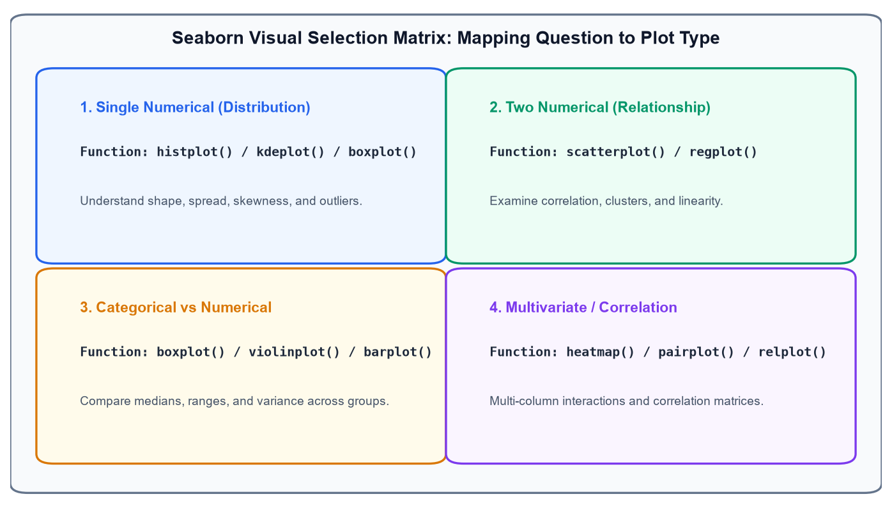
| Analytical Question | Suitable Visualization | Common Seaborn Function | Important Caution / Limitation |
|---|---|---|---|
| How is one numerical variable distributed? | Histogram or KDE curve | sns.histplot(), sns.kdeplot() |
KDE is a mathematical density estimate, not exact distribution. Always test multiple bin widths. |
| How do two numerical variables relate? | Scatter plot with optional regression fit | sns.scatterplot(), sns.regplot() |
Statistical association does not equal real-world causation. Check for extreme leverage outliers. |
| How do categories differ in numerical spread? | Box plot or Violin plot | sns.boxplot(), sns.violinplot() |
Boxplots hide multimodal peaks. Overlay with sns.stripplot() for sample size transparency. |
| How many observations are in each category? | Count plot | sns.countplot() |
Always sort categories by frequency (order=...) to highlight imbalance. |
| How do numerical values change over time? | Line plot | sns.lineplot() |
Ensure timestamps are chronologically sorted; line plots imply continuity across missing intervals. |
| Which pairs of numerical variables correlate? | Correlation Heatmap | sns.heatmap() |
Pearson r only captures linear links. Exclude identifier columns before matrix calculation. |
| How do multiple numerical variables interact? | Pair plot matrix | sns.pairplot() |
Limit to 3–5 core features. Plotting > 8 variables creates unreadable, slow-rendering matrices. |
| How do multi-category groups compare? | Faceted small multiples | sns.relplot(), sns.catplot() |
Too many facet columns reduce individual readability. Keep col_wrap between 2 and 4. |
def recommend_plot(var1_type, var2_type=None, is_temporal=False):
"""Recommends the best Seaborn chart based on variable types."""
if is_temporal:
return "sns.lineplot(x=time_col, y=num_col) -> Temporal trend exploration"
if var2_type is None:
if var1_type == "numeric":
return "sns.histplot(kde=True) or sns.ecdfplot() -> Univariate numerical"
else:
return "sns.countplot(order=...) -> Univariate category frequency"
if var1_type == "numeric" and var2_type == "numeric":
return "sns.regplot() or sns.scatterplot() -> Bivariate numerical relationship"
if (var1_type == "categorical" and var2_type == "numeric") or (var1_type == "numeric" and var2_type == "categorical"):
return "sns.boxplot() overlaid with sns.stripplot() -> Group distribution comparison"
return "pd.crosstab() + sns.heatmap() -> Categorical contingency analysis"
print("Recommendation for Study Hours vs Score:", recommend_plot("numeric", "numeric"))
print("Recommendation for Department vs Score:", recommend_plot("categorical", "numeric"))
print("Recommendation for Monthly Revenue:", recommend_plot("numeric", is_temporal=True))Chaliye ek real-world college dataset par complete 12-step EDA workflow execute karte hain. Hamara analytical question hai: "Kya student study hours aur attendance exam marks ke reliable predictors hain, aur kya department-wise pass rates me significant variation hai?"
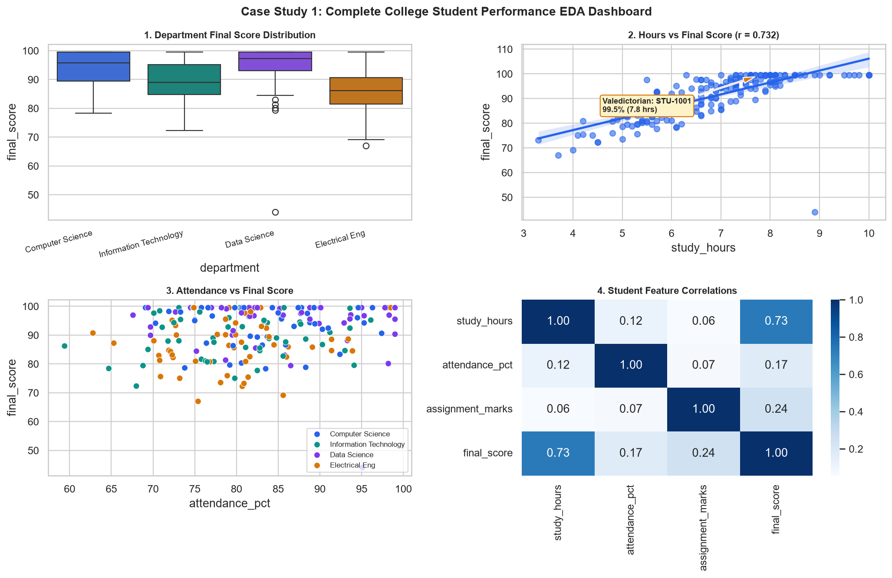
Yeh standalone reusable script pure college EDA ko end-to-end execute karta hai:
import pandas as pd
import seaborn as sns
import matplotlib.pyplot as plt
# 1. Load data
df = pd.read_csv("scratch/seaborn_topic20_data/student_eda_dataset.csv")
# 2. Audit & Clean Duplicates & Missingness
df_clean = df.drop_duplicates().copy()
df_clean["internal_marks"] = df_clean["internal_marks"].fillna(df_clean["internal_marks"].median())
df_clean["attendance_pct"] = df_clean["attendance_pct"].fillna(df_clean["attendance_pct"].median())
# 3. Compute Core Descriptive Statistics
dept_scores = df_clean.groupby("department")["final_score"].agg(["count", "mean", "median", "std"]).round(2)
print("Department Academic Summary:")
print(dept_scores)
# 4. Correlation Analysis
r_hours = df_clean["study_hours"].corr(df_clean["final_score"])
print(f"\nPearson Correlation (Hours vs Score): {r_hours:.3f}")
# 5. Identify Valedictorian
topper = df_clean.loc[df_clean["final_score"].idxmax()]
print(f"Top Scorer: {topper['student_id']} ({topper['final_score']}% in {topper['department']})")findings = [
"WHAT DATA SHOWS: Study hours has a strong positive correlation (r = 0.732) with exam score.",
"WHAT DATA SUGGESTS: Data Science and Computer Science departments have slightly higher mean scores (94.2% and 93.6%) compared to Electrical (86.0%).",
"WHAT CANNOT BE CONCLUDED: We CANNOT conclude that Electrical Engineering faculty is worse; curriculum difficulty and grading thresholds were unmeasured!"
]
print("=== RIGOROUS EVIDENCE-BASED EDA REPORT ===")
for f in findings:
print("•", f)Hamara second case study commercial e-commerce operations par focused hai. Business questions: "Kaun si product category maximum revenue generate karti hai? Kaun sa region leading hai? Aur kya sales me holiday seasonality visible hai?"
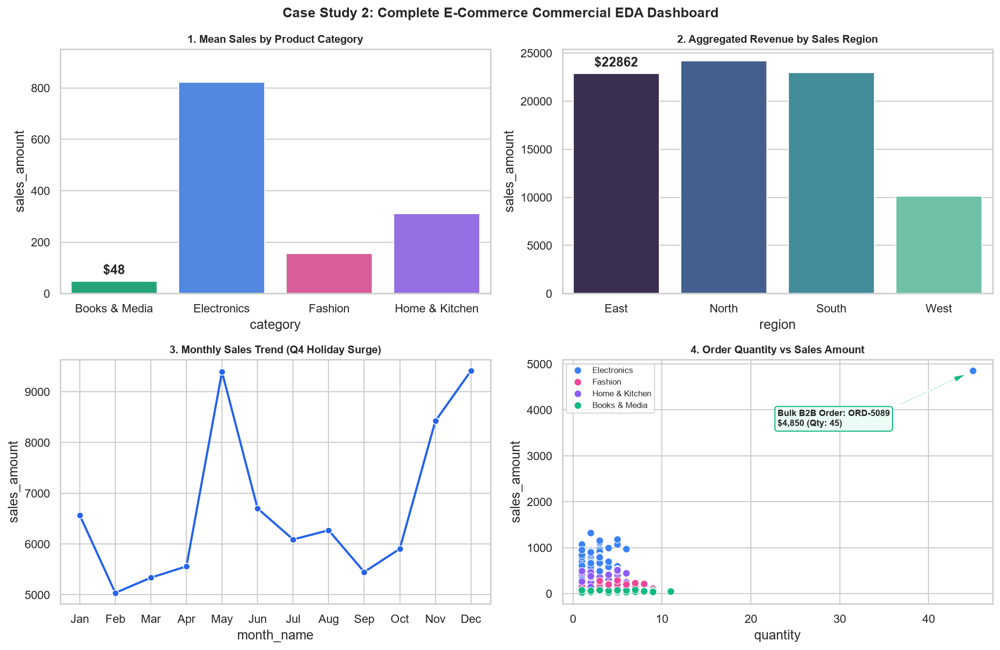
import pandas as pd
import seaborn as sns
import matplotlib.pyplot as plt
# 1. Load and parse
df = pd.read_csv("scratch/seaborn_topic20_data/ecommerce_eda_dataset.csv").drop_duplicates()
df["order_date"] = pd.to_datetime(df["order_date"])
df["month_name"] = df["order_date"].dt.strftime("%b")
# 2. Total Business Revenue
total_rev = df["sales_amount"].sum()
print(f"Total Portfolio Revenue: ${total_rev:,.2f}")
# 3. Category Metrics
cat_rev = df.groupby("category")["sales_amount"].agg(["count", "mean", "sum"]).round(2)
print("\nCategory Revenue Contribution:")
print(cat_rev)
# 4. Regional Breakdown
reg_rev = df.groupby("region")["sales_amount"].sum().round(2)
print("\nRegional Revenue Breakdown:")
print(reg_rev)ecom_takeaways = [
"REVENUE DRIVER: Electronics generates the highest mean order value ($821.25), while Books & Media has lowest ($47.69).",
"GEOGRAPHIC CONTRIBUTION: North and South regions contribute the highest total revenue ($24.2k and $23.0k).",
"SEASONALITY: Sales surge dramatically in November/December due to holiday gift purchases.",
"B2B BULK OPPORTUNITY: Order ORD-5089 ($4,850, 45 units) indicates wholesale enterprise demand that should have a dedicated B2B sales pipeline!"
]
print("=== EXECUTIVE COMMERCIAL DIGEST ===")
for t in ecom_takeaways:
print("•", t)Exploratory Data Analysis me statistical aur visual traps bohot common hote hain. Chaliye dekhte hain ki top 15 pitfalls kaun se hain aur unhe code me kaise avoid karein:
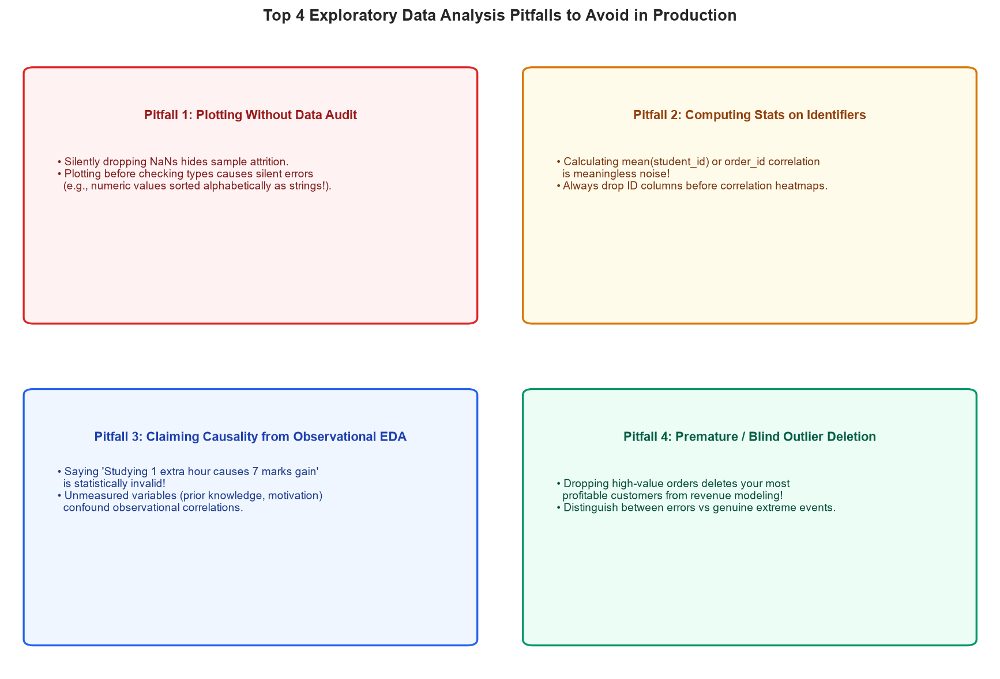
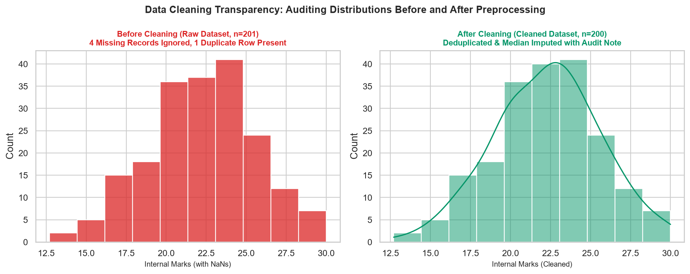
| # | Common EDA Mistake | Root Cause | Immediate Professional Fix |
|---|---|---|---|
| 1 | Plotting Before Inspecting | Direct sns.scatterplot() run karne par missing values ya wrong dtypes chart ko distort kar dete hain. |
Hamesha pehle df.info(), df.shape aur df.isnull().sum() run karein. |
| 2 | Ignoring Missing Values | Seaborn silently NaNs drop kar deta hai, jisse analyst ko pata hi nahi chalta ki 20% sample gayab ho chuka hai. | Missingness count report karein aur documented imputation (median/mode) use karein. |
| 3 | Treating IDs as Numbers | student_id ya order_id par mean, median ya correlation heatmap calculate karna meaningless hai. |
ID columns ko numerical analysis se explicitly filter out karein. |
| 4 | Using Wrong Chart for Question | Categories compare karne ke liye scatter plot ya time trend ke liye pie chart use karna. | Section 10 ka decision matrix follow karke question type ke according plot choose karein. |
| 5 | Drawing Conclusions from Tiny Samples | Agar kisi department me sirf 3 students hain, toh unke 95% average ko general fact maan lena invalid hai. | Count plots aur stripplot jitter se sample size hamesha transparent rakhein. |
| 6 | Assuming Correlation = Causation | High Pearson r dekh kar yeh assume kar lena ki X direct Y ko cause kar raha hai. |
Hamesha confounders aur unobserved drivers acknowledge karke hypothesis formulate karein. |
| 7 | Blind Outlier Deletion | Tukey's fence se bahar ke points ko error samajh kar drop kar dena. | Investigate karein: kya yeh bulk customer ya system incident hai? Contextual triage karein. |
| 8 | Too Many Colors in One Chart | 12 categories ko 12 different rainbow colors me plot karna. | Top 4 categories ko distinct colors dein, baaki sab ko 'Other' grey shade me bundle karein. |
| 9 | Misinterpreting KDE Smoothing | KDE curve ko exact physical distribution maan lena. | Remember: KDE ek mathematical estimate hai jo negative values me bhi bleed ho sakta hai. |
| 10 | Unsorted Timestamps in Line Plots | Date strings ko bina pd.to_datetime() aur sort_values() ke lineplot me pass karna jisse zigzag lines ban jaati hain. |
Dates ko real datetime me parse karke chronologically sort karein. |
| 11 | Unreadable Pair Plots | 15 features par pairplot chala dena jo 15x15 = 225 tiny unreadable subplots create karta hai. | Sirf 3 se 4 meaningful core features par curated pairplot banayein. |
| 12 | Ignoring Duplicate Records | Duplicate rows aggregate sum aur percentages ko duplicate weight de kar double count karti hain. | df.drop_duplicates() run karke deduplicate karein. |
| 13 | Reporting Synthetic Data as Real-World Truth | Educational synthetic dataset ke trend ko universal real-world biology ya business truth claim karna. | Hamesha transparent disclaimer dein: "Observed in synthetic educational dataset". |
| 14 | Bar Plot Y-Axis Truncation | Bar plots me Y-axis ko zero se shuru na karke 90 se shuru karna jisse chhoti differences massive lagti hain. | Bar plots ka baseline hamesha 0 hona chahiye! |
| 15 | Hardcoding Annotation Coordinates | Window resize hone par text box ke data points ke upar chadh jana. | Hamesha textcoords='offset points' use karein. |
import pandas as pd
import seaborn as sns
import matplotlib.pyplot as plt
df_ecom = pd.read_csv("scratch/seaborn_topic20_data/ecommerce_eda_dataset.csv").drop_duplicates()
# BAD PRACTICE: Plotting unsorted strings
# sns.lineplot(data=df_ecom, x="order_date", y="sales_amount") # Creates tangled spaghetti!
# PROPER EDA PRACTICE:
df_ecom["order_date"] = pd.to_datetime(df_ecom["order_date"])
df_sorted = df_ecom.sort_values(by="order_date")
monthly_agg = df_sorted.set_index("order_date").resample("ME")["sales_amount"].sum().reset_index()
plt.figure(figsize=(8, 4))
sns.lineplot(data=monthly_agg, x="order_date", y="sales_amount", marker="o", color="#2563EB")
plt.title("Properly Parsed and Chronologically Resampled Time-Series", fontsize=11, weight="bold")
plt.tight_layout()
plt.show()import pandas as pd
import seaborn as sns
import matplotlib.pyplot as plt
df = pd.read_csv("scratch/seaborn_topic20_data/student_eda_dataset.csv")
# Exclude any column containing 'id'
valid_features = [c for c in df.select_dtypes(include="number").columns if "id" not in c.lower()]
plt.figure(figsize=(6, 5))
sns.heatmap(df[valid_features].corr(), annot=True, cmap="vlag", center=0)
plt.title("Correlation Matrix Cleaned of Meaningless ID Features", fontsize=10.5, weight="bold")
plt.tight_layout()
plt.show()
Ab aapka ultimate final test hai! Humne challenge_retail_dataset.csv me 120 retail store locations ka dataset create kiya hai jisme store_type, footfall, conversion_rate_pct, aur revenue_usd stored hain.
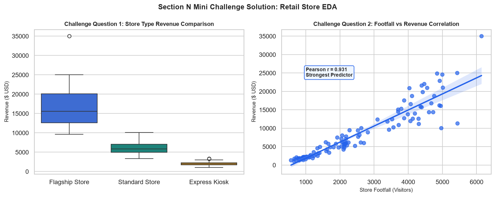
Verified Answers from Execution:
Flagship Store has the highest mean revenue at $16,562.52.import pandas as pd
import seaborn as sns
import matplotlib.pyplot as plt
# 1. Load Challenge Dataset
df_retail = pd.read_csv("scratch/seaborn_topic20_data/challenge_retail_dataset.csv")
# 2. Inspect shape & missingness
print(f"Dataset Shape: {df_retail.shape}, Nulls: {df_retail.isnull().sum().sum()}")
# 3. Answer Q1: Store type mean revenue
mean_rev = df_retail.groupby("store_type")["revenue_usd"].mean().round(2)
print("\nMean Revenue by Store Type:")
print(mean_rev)
# 4. Answer Q2: Footfall vs Revenue Correlation
r_foot = df_retail["footfall"].corr(df_retail["revenue_usd"])
print(f"\nPearson Correlation (Footfall vs Revenue): {r_foot:.3f}")
# 5. Visual Solution (Figure 20.21)
fig, axes = plt.subplots(1, 2, figsize=(11, 4.5))
sns.boxplot(data=df_retail, x="store_type", y="revenue_usd", palette="Set2", hue="store_type", legend=False, ax=axes[0])
axes[0].set_title("Store Type Revenue Distribution", weight="bold")
sns.regplot(data=df_retail, x="footfall", y="revenue_usd", color="#2563EB", ax=axes[1])
axes[1].set_title(f"Footfall vs Revenue (r = {r_foot:.3f})", weight="bold")
plt.tight_layout()
plt.show()Jab bhi aap kisi naye hackathon, company project ya research paper par kaam shuru karein, toh yeh 10 checks verify kijiye:
| Check # | Audit Dimension | Required Verification Action |
|---|---|---|
| 1 | Shape & Grain | Total rows aur columns verify karein. Ek row kis single entity ko represent karti hai (Order, User, Hour)? |
| 2 | Data Types | Numbers numeric dtypes me hain aur dates parsed datetime me hain. Zero dirty string columns. |
| 3 | Missingness | Total null count audit karein. Strategy documented: Deletion, Median Imputation, or Flagged Category. |
| 4 | Duplicates | df.duplicated().sum() check karke exact identical rows remove karein. |
| 5 | Value Bounds | Percentages [0, 100] ke beech hain, prices non-negative hain, dates realistic span me hain. |
| 6 | Class Balance | Categorical countplots me check karein: kya koi category < 5% toh nahi hai? |
| 7 | Outliers | Boxplots aur IQR check karein. Genuine business extremes ko blind delete karne se bachein. |
| 8 | Correlations | Correlation heatmap center=0 par draw karein. Exclude ID features. |
| 9 | Causality Check | Prose me association ko causation na claim karein; confounders acknowledge karein. |
| 10 | Visual Polish | Legends anchored outside, bar labels formatted, titles clear, high-contrast accessible palettes. |
glossary = {
"EDA": "Exploratory Data Analysis - Systematic process of investigating datasets to uncover patterns, anomalies, and test hypotheses.",
"Pearson r": "Linear correlation coefficient ranging from -1.0 (perfect negative) to +1.0 (perfect positive).",
"ECDF": "Empirical Cumulative Distribution Function showing the exact percentile proportion of data at or below each value.",
"KDE": "Kernel Density Estimation - Continuous probability density estimate curve smoothed over data points.",
"IQR": "Interquartile Range (Q3 - Q1) representing the middle 50% spread of the dataset.",
"Confounder": "An unmeasured variable that influences both the independent and dependent variables, creating spurious correlation."
}
for term, definition in glossary.items():
print(f"{term:<12}: {definition}")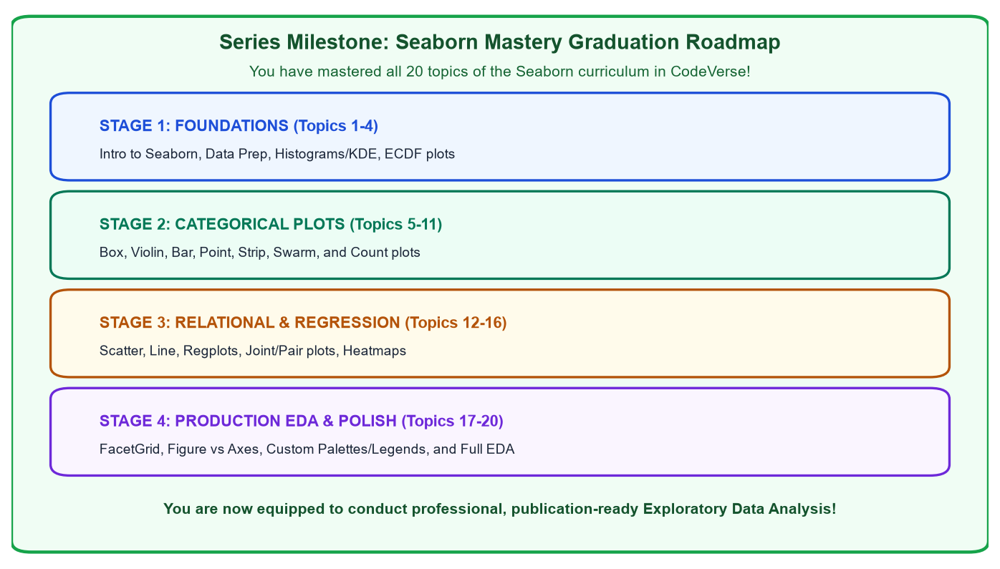
Topic 1 se lekar Topic 20 tak aapne Python data visualization ki complete journey तय ki hai!
Aapne basic histograms aur KDE se shuru kiya, boxplots aur violin plots me distributions ko unpack kiya, relational aur regression analysis me trends model kiye, FacetGrid aur multi-plot grids par complex dashboards banaye, aur custom palettes, legends aur annotations ke saath publication-grade polish master kiya!
Ab aap ek confident Data Analyst aur Data Scientist hain. Apne naye datasets par question-driven EDA apply kijiye aur data se compelling visual stories build kijiye!